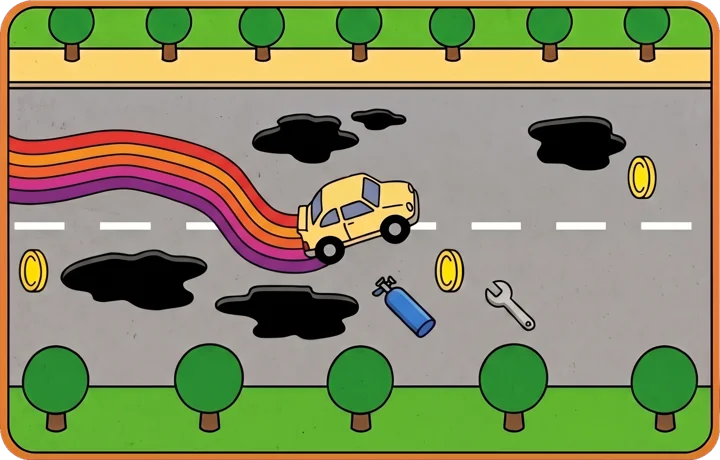
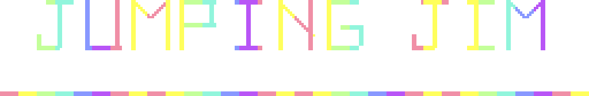
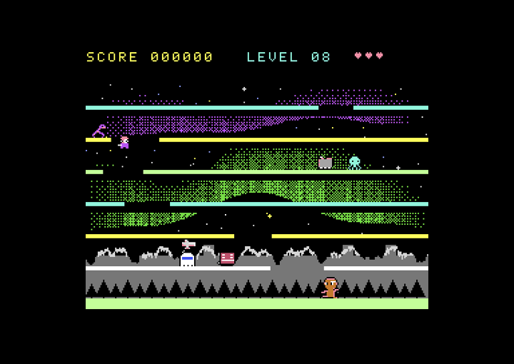

GAMESJUEGOS
POTHOLE RUSH

Commodore 64
Dodge potholes, collect coins and jump over cones. Test version for PAL machines, free to download.
Esquiva baches, recoge monedas y salta conos. Versión de prueba para máquinas PAL, de descarga gratuita.


Commodore 64
Climb seven floors through sliding gaps and dodge eight kinds of baddies. Version 1.1.0 for PAL, NTSC and PAL-N, free to download.
Sube siete pisos por huecos que se deslizan y esquiva ocho clases de enemigos. Versión 1.1.0 para PAL, NTSC y PAL-N, de descarga gratuita.